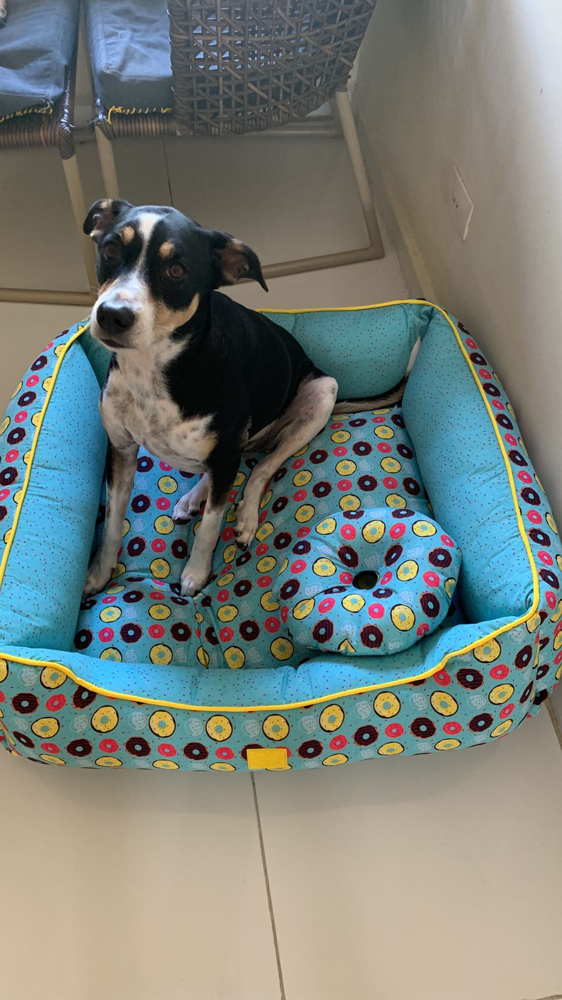
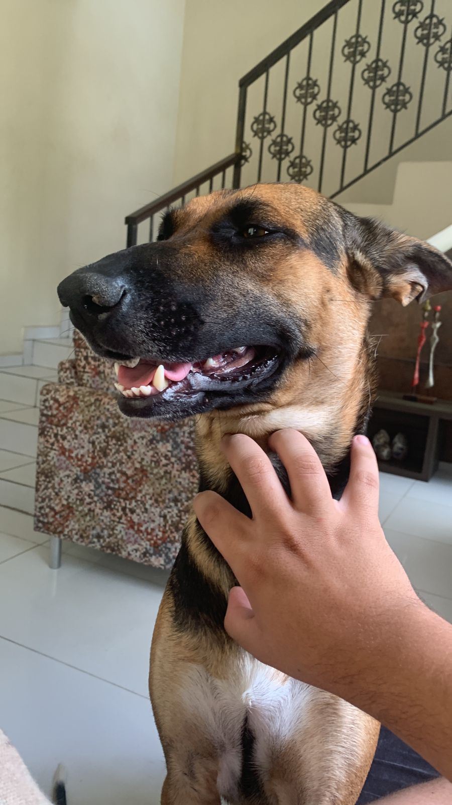

Eu sou Danilo Novaes Cabral de Gusmão, um aluno de ADS da Cesar School e ex-aluno de Ciências Contábeis da UFPE. Sou uma pessoa que gosta de trabalhar na área criativa, como escrita e elaboração de personagens para histórias. Tenho experiência em jogos de RPG de mesa há mais de 10 anos e estudo criação de mundos e estruturação de contos há 4 anos, em busca de melhorar minhas habilidades.
Além de estudar sobre criação de histórias e mapas, eu treino comunicação descritiva para melhor explicar sobre os locais que estou criando para os meus jogadores. Também estudo história militar e armamentista para entender como as armas evoluíram e como elas afetaram a evolução das sociedades, utilizando esses conhecimentos na criação dos meus mundos e cenários. Gosto de animais e constantemente vejo vídeos e textos sobre eles. Tenho dois cachorros: uma vira-lata chamada Bella e uma mistura de pastor alemão e vira-lata chamada Isa. Estou sempre treinando as duas para melhorar a obediência e, um dia, poder passear com elas sem o uso de coleira. Essa é Bella Essa é IsaSou novo no mercado de tecnologia e busco adquirir mais conhecimento na área. Tenho dificuldades em manter a atenção por muito tempo, especialmente quando estou fora do horário efetivo do meu remédio, mas raramente isso acontece. Trabalhei em projetos na área criativa no passado, mas esses projetos não foram adiante por conta de problemas de tempo e falta de capital. Tenho experiência em trabalhar na área contábil, pois fiz até o 4° período de Contabilidade.